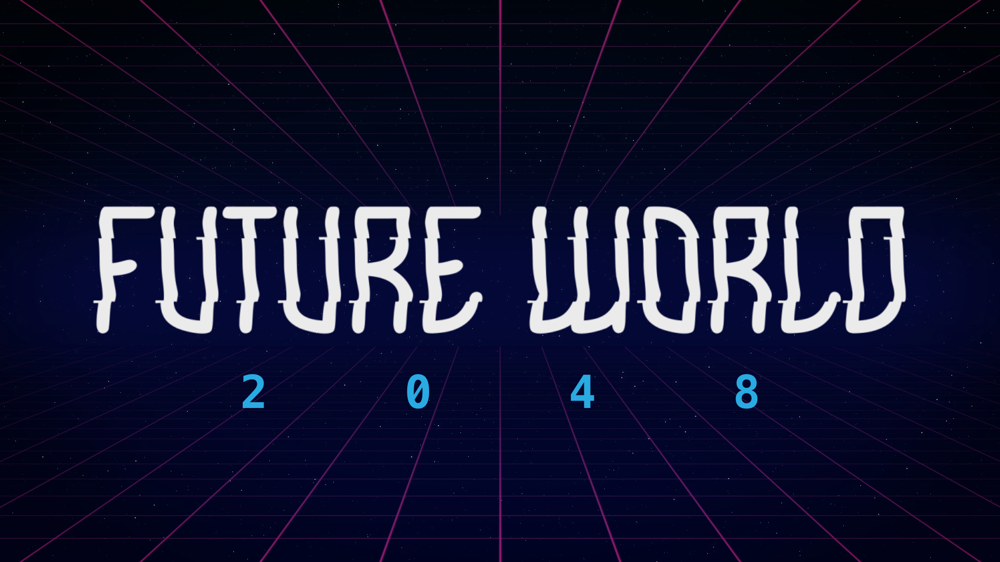

Select a node to explore.
Choose a node to open it. Drag to move around. Scroll, pinch, or use +/− to zoom. Use the fit button to recenter.
Use List for another way to browse. With the map focused, use arrow keys to pan and 0 to fit. Tab to a node and press Enter to open it.